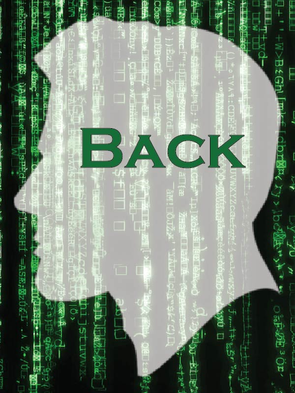

In psychology, decision making is regarded as the cognitive process resulting in the selection of a belief or a course of action among several alternative posiibilities. Every decision making process produces a final choice, which may or may not prompt action. Decision making is the process of identifying and choosing alternatives based on the values, preferences, and beliefs of the decision maker.
